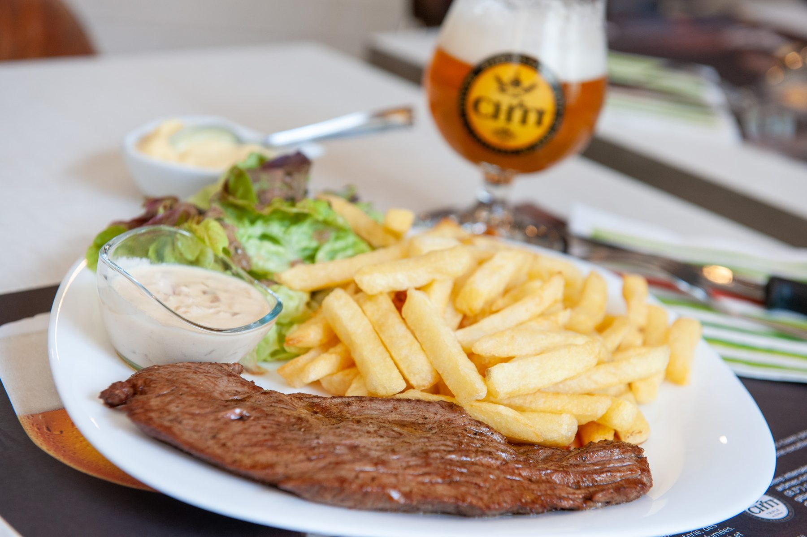
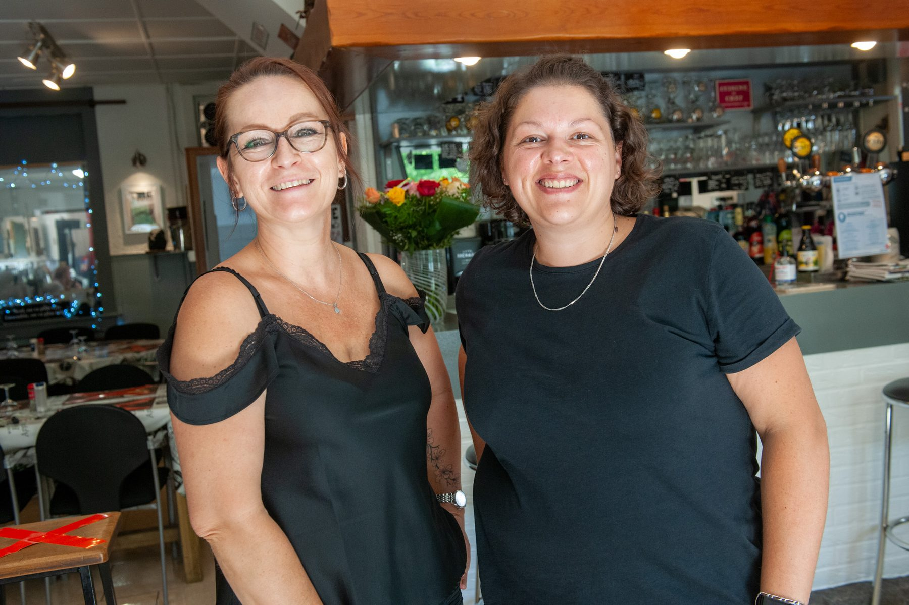
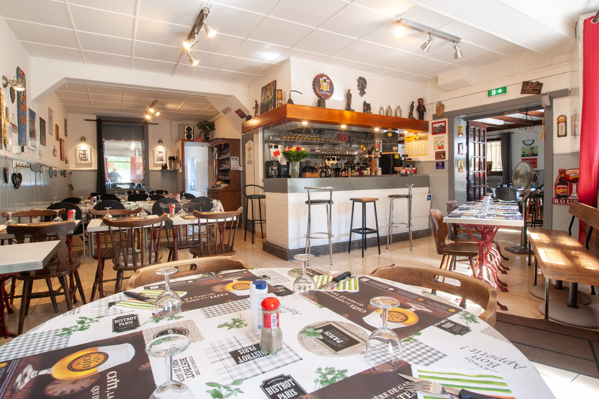

Juste PARFAIT ! Un accueil charmant, dynamique, sympathique et bienveillant. Des assiettes copieuses.
Véronique B.Google
Une assiette qui cale, une bière du coin bien fraîche, et Sandy qui vous appelle par votre prénom dès la deuxième fois. C'est ça, le Briquet.

Pas de carte à rallonge ni de dressage à la pince. Des plats du Nord faits le matin même, des portions de mineur et une salle où tout le monde finit par se parler.
Carbonade, potjevleesch, lasagnes, frites fraîches : tout est préparé en cuisine, et ça se sent.
Le plat du jour entre 12 et 14 €, et personne ne repart avec un petit creux. Tickets resto acceptés.
C'est ce qui revient dans presque tous les avis : on est reçu comme chez des amis, pas comme un numéro de table.

Sandy & l'équipe
Lampes de mineur et figurines au-dessus du bar, affiches des Ch'tis, nappes à carreaux : rien n'est là pour faire décor, tout vient du quartier. Le midi, les tables se remplissent d'habitués, d'ouvriers du coin et de randonneurs qui montent aux terrils.
Dans le bassin minier, « prendre son briquet » ne voulait pas dire allumer quoi que ce soit. C'était le repas que le mineur glissait dans sa musette avant de descendre à 600 mètres sous terre : des tartines, un bout de fromage ou de lard, un café froid dans la gourde. On le mangeait au fond, assis dans la veine, à la lueur de la lampe.
Le chevalet, c'est le chevalement : la grande tour de fer plantée au-dessus du puits, qui faisait monter et descendre les cages. Celui de la fosse 11/19 est à quelques minutes à pied d'ici, et il est toujours debout.
Ici, le briquet se prend assis, au chaud, et il est servi.
Loos-en-Gohelle a vécu près d'un siècle au rythme de la fosse 11/19 de la Compagnie des mines de Lens. Autour du carreau, les estaminets accueillaient les mineurs à la remonte : un verre, une partie de cartes, les nouvelles du quartier. Le Briquet du Chevalet est l'un de ces cafés, et il a gardé le rôle.
La Compagnie des mines de Lens ouvre la fosse qui va faire vivre le village. Les corons et les estaminets poussent autour.
Le village est entièrement détruit pendant la Grande Guerre. La fosse est reconstruite dans les années 1920.
Une tour d'extraction en béton de 66 mètres vient épauler le chevalement métallique du 11. Les deux dominent encore la plaine.
Fin de l'extraction. Les terrils 74 et 74A restent, et deviennent un terrain de balade, de trail et de couchers de soleil.
Le 30 juin, le bassin minier est inscrit au patrimoine mondial. Le site du 11/19 en est l'un des grands lieux de mémoire, et Loos-en-Gohelle une ville pilote de la transition écologique.
Parking sur place. Depuis Lens : direction Loos-en-Gohelle par la D943, puis rue Léon Blum. Depuis l'A21 : sortie Loos-en-Gohelle, le restaurant est à 3 minutes.
Le midi ça se remplit vite, surtout le vendredi : un coup de fil le matin et votre table est gardée. Groupes, repas d'équipe et réceptions dans la salle privative sur demande.
144 rue Léon Blum| Lundi | 11h – 19h |
| Mardi | 11h – 19h |
| Mercredi | 11h – 16h |
| Jeudi | 11h – 19h |
| Vendredi | 11h – 19h |
| Samedi | Fermé |
| Dimanche | Fermé |
Cuisine le midi, bar l'après-midi. Un doute un jour férié ? Un coup de fil.
Service le midi, du lundi au vendredi. Un appel le matin suffit, on vous garde la table. Groupes et réceptions sur demande.